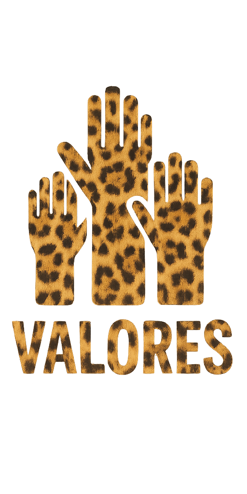

Esta marca de ropa streetwear online nace con la misión de redefinir la moda urbana,
ofreciendo prendas de alta calidad con diseños exclusivos que reflejan la autenticidad y
esencia de la cultura callejera. Spicy Gallery nace con la intención de romper la tradición y
desafiar las normas establecidas de la moda urbana. La marca defiende la autoexpresión sin
miedo, valorando la autenticidad y la actitud de los individuos que se atrevan a ser diferentes.
El propósito es que cada prenda logre transmitir confianza e intrepidez, motivando a los
consumidores a superar las fronteras y a construir su propia trayectoria en el mundo. Se quiere
consolidar la marca como una de las más referentes en el mercado de la moda urbana,
sirviendo como inspiración para una comunidad global y marcas emergentes desafiando lo
convencional. Spicy Gallery busca conseguir convertirse en un movimiento cultural que
fomente la creatividad y la diversidad. Se ambiciona a expandirse a nivel internacional y
colaborar con artistas y diseñadores que compartan la filosofía y valores de la marca.

Se basa en valores como la autenticidad, el compromiso con el medio ambiente, la
colaboración con creadores, la creatividad sin límites y el respeto por la esencia de la cultura
streetwear, promoviendo la autoexpresión a través de cada prenda. Además de lo
anteriormente mencionado, también abarcan la autenticidad, con la idea de lo importante que
es ser fiel a uno mismo; el atrevimiento y la creatividad, desafiando las normas establecidas y
diseñando prendas con estilos únicos; la sostenibilidad e innovación, comprometiéndose con
el medio ambiente en cada proceso y explorando nuevas tendencias; y construyendo una
comunidad fuerte y fomentando la autoexpresión.